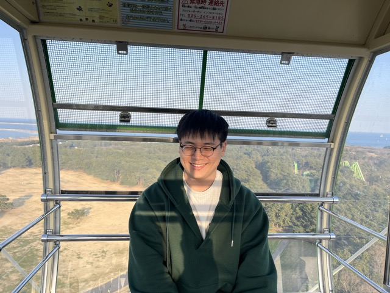

<div class="row flex-column-reverse flex-md-row py-2">
    <div class="col-md-8" id="bio">
        <h1>Junwoon Lee</h1>
        <p class="text-justify">
            I am a master student at the University of the Tokyo, supervised with <a target="_blank" href="https://www.robot.t.u-tokyo.ac.jp/~yamashita/">Prof. Atsushi Yamashita</a>. 
            My research interests lie in moblie robotics in extreme or dynamic environments and field robotics. 
            
            I was also co-supervised with <a target="_blank" href="https://www.robot.t.u-tokyo.ac.jp/anlab/index.php/en/self-2/">Associate Prof. Qi An</a>, <a target="_blank" href="https://matsuren.github.io">Ph.D. Ren Komatsu</a>, 
            and <a target="_blank" href="https://www.robot.t.u-tokyo.ac.jp/asamalab/en/members/asama/biography.html">Prof. Asama Hajime</a> at the University of the Tokyo. 
            Prior to my master study, I was 

            I currently research about SLAM robust to both LiDAR degraded (unstructured) and visually degraded (aggressive motion and texture-less) scenes.
        </p>
        <p style="text-align:center">
            <a target="_blank" href="mailto: leejunwoon@robot.t.u-tokyo.ac.jp">Email</a> &nbsp;/&nbsp;
            <a target="_blank" href="images/cv.pdf">CV</a> &nbsp;/&nbsp;
            <a href="https://scholar.google.com/citations?user=g65vfS4AAAAJ&hl=en">Google Scholar</a> &nbsp;/&nbsp;
            <a href="https://www.linkedin.com/in/junwoon-lee/">LinkedIn </a>
        </p>
    </div>
    <div class="col-md-4" style="z-index:4;">
        
    </div>
</div>

{% include publications.html %}